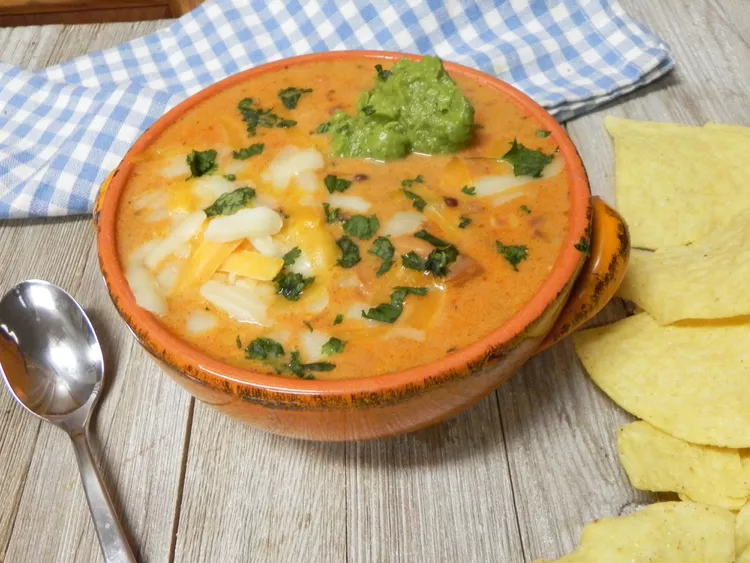

5 Ingredient Cheesy Taco Soup

Description
5 ingredients and water is all you'll need to get this 5 ingredient cheesy taco soup on the dinner table in no time. Garnish with guacamole, sour cream, shredded cheese, jalapenos, cilantro, or whatever you like. I like to serve it with tortilla chips instead of crackers.
Ingredients
- 1 pound lean ground beef
- 1 (1 ounce) packet taco seasoning
- 1 (15 1/2 ounce) can pinto beans, undrained
- 1 (24 ounce) jar black bean and corn salsa
- 3/4 cup prepared salsa con queso dip
- 1 1/2 cups water
Instructions
- Crumble ground beef in a soup pot over medium-high heat. Add taco seasoning packet. Cook until beef is no longer pink, about 5 minutes.
- Drain grease and add beef mixture back to the pot. Stir in pinto beans, salsa, cheese dip, and water.
- Bring to a boil. Reduce heat and simmer for 15 minutes. Ladle into bowls and top with toppings of choice.
Back to home Page